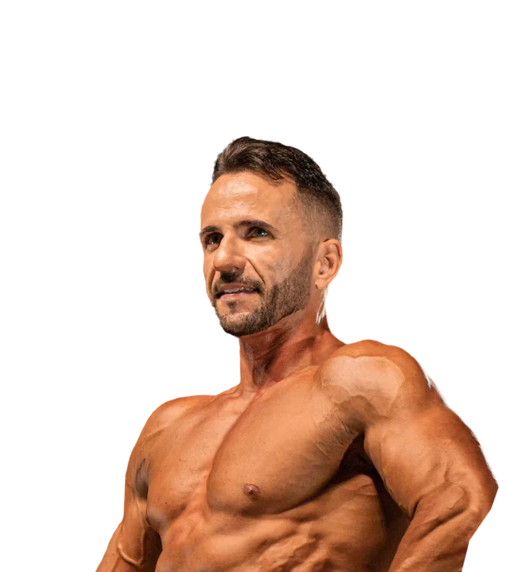
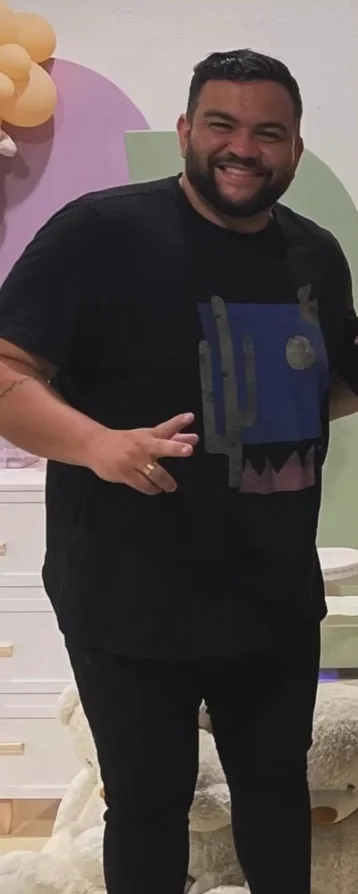
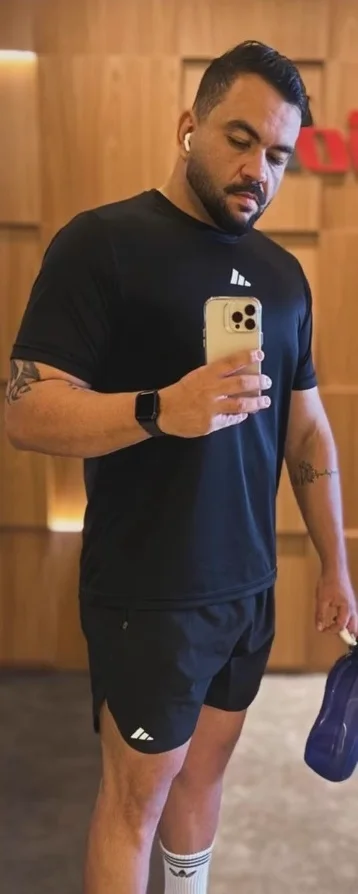
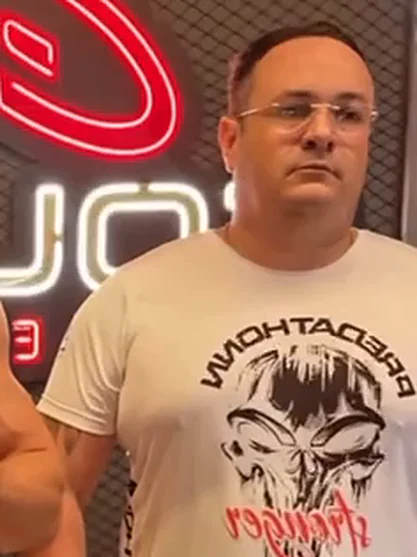
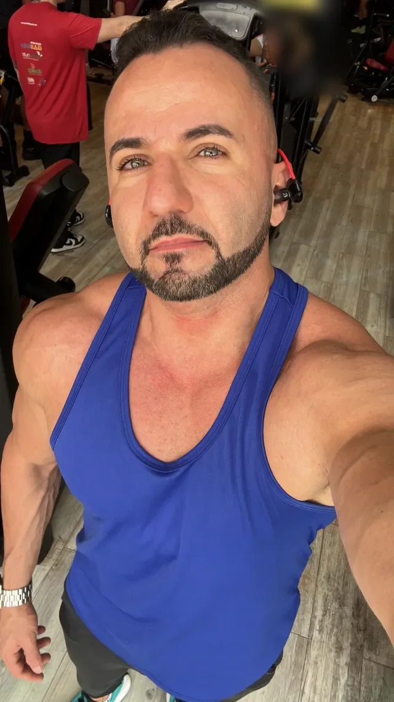

#TreinoSemDengo
Pra elas
Carga de verdade, técnica limpa e constância. Treino feminino sem enfeite, pra emagrecer, ganhar forma e cuidar da saúde.
Personal trainer · CREF 23516 · Feira de Santana

Treino planejado por quem estuda Nutrição e sobe no palco. Presencial na BIOHIT, na Gaviões e em condomínio, ou online.
Os objetivos de quem treina com ele hoje: emagrecimento, hipertrofia e saúde física.
#TreinoSemDengo
Carga de verdade, técnica limpa e constância. Treino feminino sem enfeite, pra emagrecer, ganhar forma e cuidar da saúde.
#Marcha #PraCima
Hipertrofia, força e disciplina. Série puxada até o fim, com a execução no lugar, pra crescer com técnica.
A ficha
É assim que funciona o acompanhamento com o João, linha por linha.
Assinatura
Resultados

Antes
Depois
AntesResultados individuais: cada corpo responde de um jeito. Antes e depois publicados no Instagram do João, com autorização do Manoel e do Bruno.

Quem é
João trabalha como personal desde 2023 e compete no fisiculturismo e no jiu-jitsu. O diferencial dele é a graduação em Nutrição, em fase final, somada à profissão de personal: entender o corpo além da série e da carga.
Bastidor
Temporada de competição é protocolo seguido à risca. É essa disciplina que ele leva pro seu treino.
Palestras em empresas
Na SIPAT da Economart, em Feira de Santana, João deu três palestras para colaboradores de setores diferentes.
Investimento
Por aluno · 60 min acompanhado · no máximo 2 alunos por horário · presencial ou online
Presencial nas academias BIOHIT e Gaviões e em condomínio. Também atende online.
R$ 810 por mês, por aluno.
60 minutos de acompanhamento, com no máximo 2 alunos por horário. A atenção fica em você, série por série.
Sim. O acompanhamento é presencial ou online.
João é graduando em Nutrição: já apresentou o TCC e conclui os estágios no próximo semestre. A formação é a base de conhecimento por trás do treino; o acompanhamento é de personal trainer, registrado no CREF 23516.
Sim. Hoje os alunos são metade homens e metade mulheres, com objetivos de emagrecimento, hipertrofia e saúde física.
Sim. Na SIPAT da Economart, em Feira de Santana, ele deu três palestras: atividade física no trabalho, alimentação e atividade física, e saúde mental. Para levar uma palestra à sua empresa, chame no WhatsApp.
Chame no WhatsApp (75) 98844-1860, conte o seu objetivo e combine local e horário.
Personal trainer em Feira de Santana. Presencial ou online.
Chamar no WhatsApp